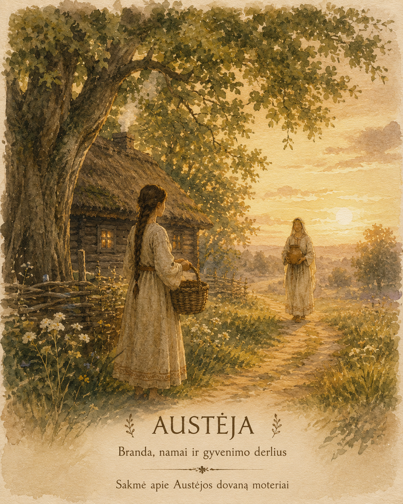
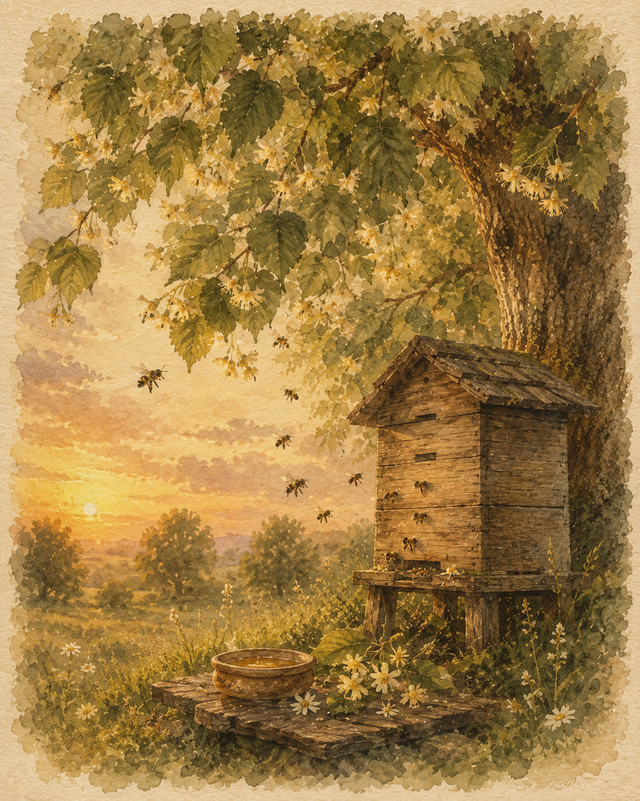

Laumijos sakmė
Sakmė apie Austėjos dovaną moteriai
Atsidūko tai senų senovėje, kuomet žemelė dar šviežiu medumi kvepėjo, o žmogus po dangučiu savo vietos tebeieškojo.
Gyveno tuomet jauna moterėlė. Pasistatė jiedu su vyru dūminę pirkelę šalia senojo liepyno, ale džiaugsmo jos širdelė dar nepažinojo. Rąstų sienelės buvo plonos, vėjai pro rieves švilpavo, ugnelė krosnyje tai ruseno, tai visai užgesdavo, o nameliai stovėjo nykūs ir šalti, lyg svetimi būtų. Vyras nuo aušrelės ligi sutemų miškan išeidavo, o ji viena, vargelį vargdama, vis dūmojo, ko jos pirkelei stinga, kad tikrais namais taptų.
Sykį, saulei vakarop riedant, kai šešėliai pailgo, išgirdo moterėlė keistą dūzgesį. Tylų, ramų, lyg pati žemelė giesmelę niūniuotų.

Pakėlė akis ir žiūri – iš senojo liepyno ateina moteriškė. Rūbai jos gelsvi lyg bičių vaškas, plaukuose liepų žiedai žiba, o rankose ji neša molinę puodynėlę, sklidiną saldaus nektaro. Buvo tai pati deivė Austėja – bičių motinėlė ir moterų globėja.
– Ko dūmoji, moterėle? Ko ašarėlėmis žemelę laistai? – švelniu, lyg bičių dūzgimas, balsu paklausė Austėja.
Puolė moterėlė deivei po kojų.
– Sunkus mano vargelis, deivute. Namai šalti, lyg sielos neturėtų. Kad ir kiek triūsčiau, vis rodos, jog kažko stinga. Nesugebu šilumos savo pirkelėn prisišaukti.
Nusišypsojo Austėja, o jos šypsena buvo saldi lyg ką tik išsuktas medus. Atvėrė ji savo puodynėlę, ir iš jos pakilo tūkstančiai auksinių bitelių. Vienos nutūpė ant židinio, kitos ant lango, dar kitos palindo po stogu. Visa pirkelė prisipildė jų dūzgesio, ir rodės, lyg pati gyvybė būtų į namus sugrįžusi.
Tuomet Austėja tarė:
Pažvelk į mano mažąsias darbininkes. Jos nedejuoja, kad avilys tuščias. Kiekviena neša po lašelį, ir iš tų lašelių gimsta medus. Taip ir namai. Ne iš rąstų jie gimsta, ne iš stogo ir ne iš slenksčio. Namai gimsta iš rankų, kurios juos kasdien su meile paliečia.
Padavė deivė moterėlei vaško gniužulėlį, kvepiantį medumi, ir saują šventų žolynų.
Išmokė ją lino giją verpti, drobeles austi, žvakeles lieti, namų kampus žolynais dabinti, lopšines vaikeliams niūniuoti ir duonelę su pagarba ant stalo padėti.
Atmink. Kiekvienas tavo rankų prisilietimas tebūna lyg medaus lašelis. Iš daugybės tokių lašelių gimsta namai, kuriuose gera ir žmogui, ir paukščiui, ir bitelei.
Tai ištarusi deivė virto lengvu vasaros vėjeliu, o virš liepyno dar ilgai dūzgė bitės.
Nuo tos dienos moterėlė pajuto širdyje naują stiprybę. Prisuko vaškinių žvakelių, išaudė margiausias staltieses, o krosnies ugnelė daugiau niekuomet neužgeso. Žmonės sakė, jog vos pravėrus jos duris širdis pati nurimsta, lyg medaus saldumas ore tvyrotų.
Pamatė tai ir kitos kaimo moterys. Jos taip pat ėmė garbinti Austėją ir mokėsi, kad didžiausia dovana moteriai – ne auksas ir ne turtai, o gebėjimas savo rankomis, kantrybe ir meile namus paversti vieta, į kurią visada norisi sugrįžti.
Deivės pasaulis
Austėja baltų pasaulėžiūroje
Austėja minima tarp baltų dievybių kaip bičių globėja. Nors rašytinių šaltinių apie ją išliko nedaug, jos vardas liudija, kad bitės ir jų pasaulis buvo laikomi ypatingos svarbos žmogaus gyvenime.
Tai rodo ne tik bičių reikšmę kasdienybėje, bet ir pagarbą gyvybei, gamtos tvarkai bei tarpusavio darnai.
Skirtingai nei kai kurios plačiau aprašytos baltų deivės, Austėjos paveikslas išliko fragmentiškas. Dėl to šiandien negalime tiksliai atkurti visų su ja susijusių apeigų ar tikėjimų. Tačiau net ir šie nedideli istorijos fragmentai leidžia suprasti, kad ji buvo svarbi baltų pasaulėžiūros dalis.
Baltų tikėjime dievybės nebuvo atitolusios nuo žmogaus. Jos lydėjo kasdienius darbus, metų laikų kaitą ir gamtos ritmą. Todėl Austėja šiandien suvokiama ne tik kaip bičių globėja, bet ir kaip gyvybės brandos, rūpesčio bei darnos simbolis.
Laumijoje Austėja tęsia šią mintį. Ji įkūnija laiką, kai tai, kas buvo kantriai auginta, ima bręsti. Tai vasaros pilnatvės metas – ne skubėjimo, o ramaus pasitikėjimo gamtos tvarka.
Rėdos ratas
Austėjos laikas Rėdos rate
Metų ratas nuolat sukasi. Po pavasario veržlumo ir vasaros žydėjimo ateina metas, kai gamta pradeda brandinti tai, kas buvo pasėta. Baltų pasaulėžiūroje kiekvienas laikotarpis turi savo prasmę, o kiekviena deivė globoja vis kitą šio ciklo dalį.
Laumijos Rėdos rate Austėjos laikas prasideda vasaros pabaigoje. Tai laikotarpis, kai laukai jau noksta, sodai pilnėja vaisių, o žmogus pirmą kartą gali aiškiai pamatyti savo darbo vaisius. Tai nebėra sėjos ar augimo metas – tai brendimo laikas.
Būtent todėl Laumijos pasaulyje sakoma, kad Austėja užsuka Rėdos rato korius, o kartu su ja pasaulis pradeda rinkti tai, kas buvo auginta nuo pavasario.
Šis virsmas vyksta ne tik gamtoje. Jis vyksta ir žmogaus gyvenime. Vasaros pabaiga kviečia trumpam sustoti, pažvelgti į nueitą kelią ir įvertinti, kas per šį laiką užaugo – darbuose, santykiuose, namuose ir pačiame žmoguje.
Todėl Austėjos sezonas nėra vien derliaus metas. Jis primena, kad tikroji branda ateina pamažu. Kiekviena diena, kiekvienas rūpestingai atliktas darbas ir kiekvienas mažas sprendimas ilgainiui tampa gyvenimo derliaus dalimi.
Po Austėjos Rėdos ratas juda toliau. Gamta pamažu rimsta ir pasaulis žengia į Medeinos laiką, kuriame prasideda kita kelionės dalis – pasirengimas paleisti tai, kas jau atliko savo paskirtį.
Branda ir darna
Ką simbolizuoja Austėja?
Austėjos laikas primena, kad visa, kas vertinga, subręsta pamažu. Bitės po lašelį renka nektarą, žemė kantriai augina derlių, o žmogaus gyvenime dideli pokyčiai gimsta iš mažų kasdienių pasirinkimų.
Todėl Austėja simbolizuoja ne tik bites ar vasaros pabaigą. Ji primena brandą, rūpestį, darną ir gebėjimą kantriai auginti tai, kas vieną dieną taps gyvenimo derliumi.
Ką šiemet brandinau ir kas mano gyvenime jau subrendo?
Rugpjūčio pradžia
Bičių diena
Rugpjūčio pradžioje, kai vasara pasiekia brandą, Lietuvoje minima Bičių diena. Tai padėkos metas bitėms – mažosioms gamtos darbininkėms, nuo kurių priklauso ne tik medus, bet ir daugelio augalų gyvybė.
Senovėje bitės buvo laikomos ypatingomis. Tikėta, kad jos supranta žmogų, jaučia jo nuotaiką ir nemėgsta pykčio ar neteisybės. Bitininkai su bitėmis elgdavosi pagarbiai – apie svarbius šeimos įvykius joms net pranešdavo, tarsi jos būtų namų bendruomenės dalis.
Bičių diena primena, kad kiekvienas avilys gyvena pagal aiškią tvarką. Kiekviena bitė turi savo vaidmenį, tačiau visos dirba dėl bendro gėrio. Ši darna nuo seno žavėjo žmones ir tapo bendruomeniškumo, atsakomybės bei tarpusavio pagalbos simboliu.
Medus baltų kultūroje buvo laikomas gamtos dovana. Juo vaišindavo svečius, gardindavo šventinius valgius, naudojo apeigose. Vaškas virsdavo žvakėmis, kurios lydėdavo žmogų maldoje, šventėse ir svarbiausiuose gyvenimo virsmuose.
Laumijoje Bičių diena kviečia stabtelėti ir pažvelgti į savo gyvenimą lyg į avilį. Ar jame vyrauja darna? Ar rūpinamės tuo, kas mus maitina? Ar gebame priimti mažų kasdienių darbų vertę?
Šią dieną galima padėkoti gamtai už jos dovanas, paragauti medaus, uždegti vaškinę žvakę ar tiesiog skirti akimirką tylai, prisimenant, kad didžiausia gausa dažnai prasideda nuo visai mažų dalykų.
Vasaros pilnatvė
Žolinės – padėka už brandą
Žolinės – viena seniausių vasaros pabaigos švenčių Lietuvoje. Ji žymi laiką, kai gamta pasiekia brandą, o žmogus gali su dėkingumu priimti pirmuosius savo darbo vaisius.
Nuo seno tai buvo metas, kai iš laukų ir pievų renkami žolynai, vaistažolės, javai, daržo gėrybės ir pirmieji vaisiai.
Baltų pasaulėžiūroje žmogus nebuvo gamtos šeimininkas – jis buvo jos dalis. Todėl derlius buvo suvokiamas ne kaip savaime suprantamas dalykas, o kaip dovana, už kurią dera padėkoti.
Laikui bėgant ši šventė susiliejo su krikščioniška Žolinės tradicija, tačiau jos esmė išliko ta pati – pagarba gyvybei, žemei ir viskam, kas užaugo per vasarą.
Laumijoje Žolinės tampa ne tik gamtos, bet ir žmogaus vidinės brandos švente. Tai metas sustoti ir paklausti savęs: ką šiemet užauginau? Gal tai naujas įgūdis, išdrįstas sprendimas, sustiprėję santykiai ar didesnis pasitikėjimas savimi. Ne visas derlius matomas akimis.
Šią dieną verta susikurti savo Žolinių puokštę. Į ją galima sudėti augalus, kurie šiuo metu labiausiai traukia akį ar širdį. Kiekvienas jų tampa padėkos ženklu – ne tik gamtai, bet ir sau už nueitą kelią.
Žolinės primena, kad po brandos visada ateina naujas virsmas. Todėl padėka nėra pabaiga. Ji tampa tiltu į kitą metų rato etapą, kuriame tai, kas subrendo, pamažu virsta išmintimi.
Vidinė Austėja
Austėjos archetipas
Ji pasitiki laiku
Jai nereikia, kad viskas įvyktų šiandien. Ji supranta, jog branda turi savo ritmą. Todėl priima gyvenimo etapus su pasitikėjimu, o laikas tampa jos sąjungininku.
Ji kuria tai, kas išlieka
Santykiai, namai, verslas, bendruomenė ar vaikai – visa tai jai nėra atskiri projektai. Tai gyvas pasaulis, kuriam reikia dėmesio, kantrybės ir nuoseklaus augimo.
Jos stiprybė – gebėjimas auginti
Ji pastebi potencialą dar tada, kai kiti mato tik pradžią. Ji kantriai lydi žmogų, idėją ar svajonę, kol jie subręsta ir atsiskleidžia.
Ji priima gyvenimo ciklus
Ji supranta, kad kiekvienas etapas turi savo paskirtį. Kartais ateina metas sėti, kartais – auginti, kartais – džiaugtis derliumi, o kartais – paleisti tai, kas jau atliko savo paskirtį.
Jos iššūkis – pareigų našta
Rūpestis gali tapti našta, o natūralų ritmą pakeisti skuba. Ji išdalija savo jėgas kitiems ir pamiršta, kad net derlingiausia žemė kasmet ilsisi.
Ji moka priimti gausą
Ji leidžia sau džiaugtis tuo, ką sukūrė. Pastebi mažas pergales, priima padėką, įvertina savo darbą ir nesumenkina savo derliaus.
Ji augina ryšį
Santykiuose jai svarbus patikimumas ir augantis ryšys. Ji kuria saugumo jausmą, kuriame atsiveria pasitikėjimas, pagarba ir ilgalaikė bendrystė.
Ji kuria namus, į kuriuos norisi sugrįžti
Namai jai nėra tik erdvė. Tai jausmas. Vieta, kurioje žmogus gali atsikvėpti, augti ir jaustis priimtas. Todėl Austėjos moteris pirmiausia kuria atmosferą, o tik paskui sienas.
Ji renkasi meistriškumą
Darbe ji renkasi kokybę, meistriškumą ir prasmę. Jai artima kurti tai, kas išlieka vertinga daugelį metų. Ji žino, kad tikras autoritetas užauga per laiką.
Ji tampa savo gyvenimo šeimininke
Ji nesistengia visko kontroliuoti. Ji stebi, rūpinasi, priima sprendimus ir atsako už tai, ką kuria. Todėl jos gyvenime pamažu atsiranda daugiau tvarkos, aiškumo ir vidinės ramybės.
Brandi Austėja moka džiaugtis savo derliumi. Ji pastebi, kiek jau nueita, priima tai, kas subrendo, ir su dėkingumu žengia į kitą gyvenimo etapą.

Grįžti į Laumiją